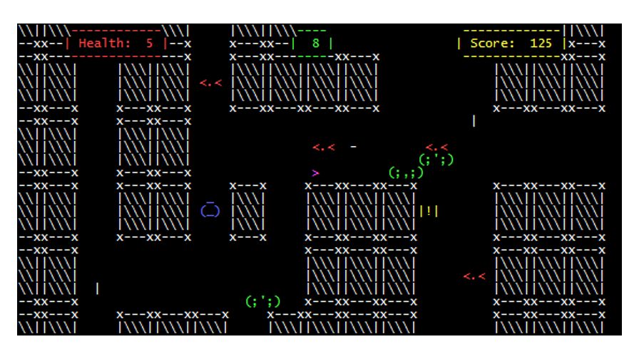

Ruins of ALASCII
ABOUT
Explore the ruins of the old city of ALASCII. Find treasure and shoot enemies while climbing deeper and deeper in the ever changing labrynth. Each floor is randomly generated and the maps get more complex the deeper you go.
Ruins of ALASCII was my final project in Technical Game Development1. In this class, we each had to make our own command line game engine from scratch in C++ and build a game using it. The engine development is where most of the hard work went and the code for it can be found here. I learned a lot about game engine development, but the most important thing I learned was how to balance efficiency. I had to implement a few memory management tricks to cut down on the time complexity of the collision algorithms because of how many enemies, bullets and walls ROA had.
The game executable can be downloaded here